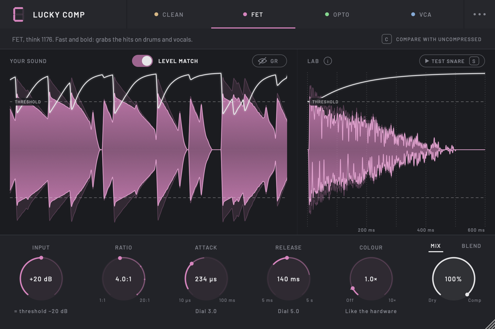
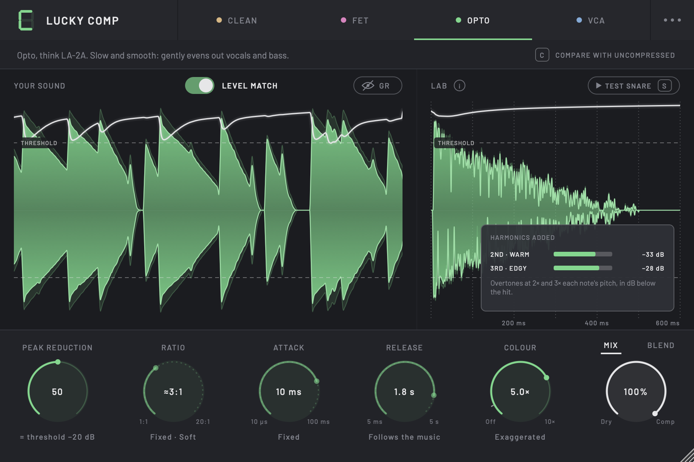
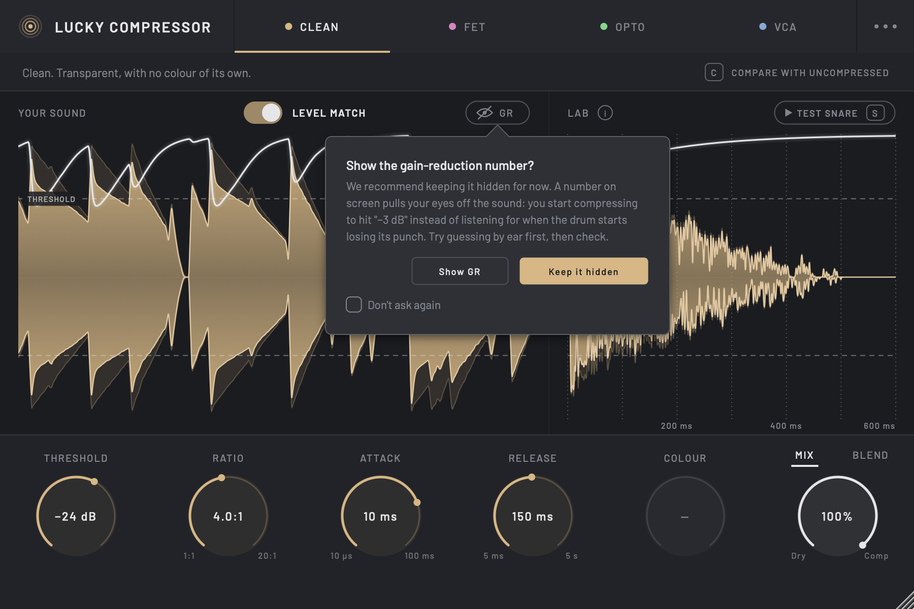

Compression, made clear.
A great-sounding compressor for real mixes that shows you what each setting does to your sound, so you know what you're listening for.
Free and open source · Apple Silicon & Intel · macOS 13 or newer

Know what you're hearing.
The classics, side by side
Clean, FET, Opto and VCA share one set of dials marked in real milliseconds, so you can see where each classic sits: an 1176-style FET can't attack slower than 0.8 ms, an LA-2A-style Opto is always 10 ms.
Hear compression, not loudness
Louder always sounds better, so Level Match turns the compressed sound to the same loudness as your track before you hear it. Level-matched as you turn, then held steady.
Gain reduction hidden by default
Most of us learned compression from a number: aim for a few dB of gain reduction. Lucky Compressor draws what the compression does to your sound and keeps the number hidden until you ask for it, so you learn what 3 dB sounds like instead of chasing it.
Parallel built in
Mix crossfades from dry to compressed, and both sides arrive equally loud, so the whole knob is useful. Switch to Blend for New York-style compression: your dry track stays at 0 dB and the compressed one is added underneath.
Colour you can turn up
Each mode adds the tone of its classic, voiced from published measurements of real units. Turn it up to hear the character clearly, then back it off. The Lab shows the harmonics it adds as you turn it.
The Lab
A real snare, run through your settings and drawn cycle by cycle: watch a fast attack flatten the crack and a slow release leave the room squashed.
Four characters, one set of dials.
Each mode follows the published behaviour of the compressor it's named after: its attack and release range, its ratios, the way it lets go, and the controls it gives you. Four carefully modelled compression behaviours, not circuit clones: the characters, ready to mix with.
Clean
Transparent
A modern, uncoloured compressor with every time in milliseconds: attack from 10 µs to 100 ms, release from 5 ms to 5 s, ratio from 1:1 to 20:1. The place to start.
FET
Think 1176
The fastest classic. Attack from 20 µs to 0.8 ms and release from 50 ms to 1.1 s, on dials that count up to go faster, ratios of 4, 8, 12 and 20. Grabs every peak.
Opto
Think LA-2A
Slow and smooth. One main knob, Peak Reduction, at a gentle 3:1 and a fixed 10 ms attack. The release follows the music: the harder you push it, the longer it holds on.
VCA
Think SSL bus compressor
Tight and punchy, for glue. Attack 0.1 to 30 ms, release 0.1 to 1.2 s or Auto, ratios of 2, 4 and 10, each knob clicking between the hardware's positions.
Colour from the real units. FET, Opto and VCA each add the tone of their classic: the harmonics it adds, how they grow with level and compression, and any roll-off at the ends of the spectrum. It's voiced from the original manuals, academic measurements of real 1176s and LA-2As, the VCA chip's datasheet, and our own measurements of a hardware FET compressor.
Every figure and its source is listed in colour-sources.md. Thanks to Austin Moore (University of Huddersfield) for his published measurements of real 1176s and LA-2As.

Guess, then check.
-
Put it on your drums
Pick the classic you'd reach for, or start in Clean.
-
Pull the threshold down until you hear it
Listen for the crack softening and the room coming up. Level Match keeps the volume steady, so that's all that changes.
-
Guess how much it's taking off, then click GR
See how close you were, then hide it again. The number is there to check your ears, not a target to hit.

Four steps to your first compression.
-
Download the installer
Download Lucky-Compressor.pkg and double-click it.
-
Give the installer permission to run
macOS blocks the installer the first time with “Lucky-Compressor.pkg” Not Opened, because Lucky Compressor isn't signed or notarised by Apple (that needs a paid developer account). To allow it:
- Click Done (not Move to Trash).
- Open System Settings → Privacy & Security and scroll down to Security.
- Click Open Anyway, enter your password, then click Open.
You only need to do this once.
-
Run the installer
Click through to the end. It installs the VST3 and the Audio Unit for every user on your Mac; you can leave either out.
-
Open it in your DAW
Add Lucky Compressor to a track (rescan plug-ins first if it doesn't appear).
Prefer to install by hand?
Download the zip from the releases page, copy Lucky Compressor.vst3 into ~/Library/Audio/Plug-Ins/VST3 and Lucky Compressor.component into ~/Library/Audio/Plug-Ins/Components. Then unblock them in Terminal:
xattr -dr com.apple.quarantine ~/Library/Audio/Plug-Ins/VST3/"Lucky Compressor.vst3" ~/Library/Audio/Plug-Ins/Components/"Lucky Compressor.component"
Updating or removing
The installer replaces the old version. If you ever copied Lucky Compressor into ~/Library/Audio/Plug-Ins by hand, delete those copies so your DAW doesn't load the old one.
To remove Lucky Compressor, delete Lucky Compressor.vst3 and Lucky Compressor.component from /Library/Audio/Plug-Ins/VST3 and /Library/Audio/Plug-Ins/Components.
Notes
Light on CPU
About 0.1 to 0.6% of one core per instance at 48 kHz on an Apple Silicon Mac, depending on the mode, at any buffer size down to 32 samples. No latency.
Formats
VST3 and Audio Unit, built for Apple Silicon and Intel Macs running macOS 13 or newer. Mono or stereo.
Keys
C compares with uncompressed, S plays the test snare. The space bar stays with your DAW.
Open source
The code is on GitHub under the AGPLv3. Bug reports, ideas and pull requests are welcome.